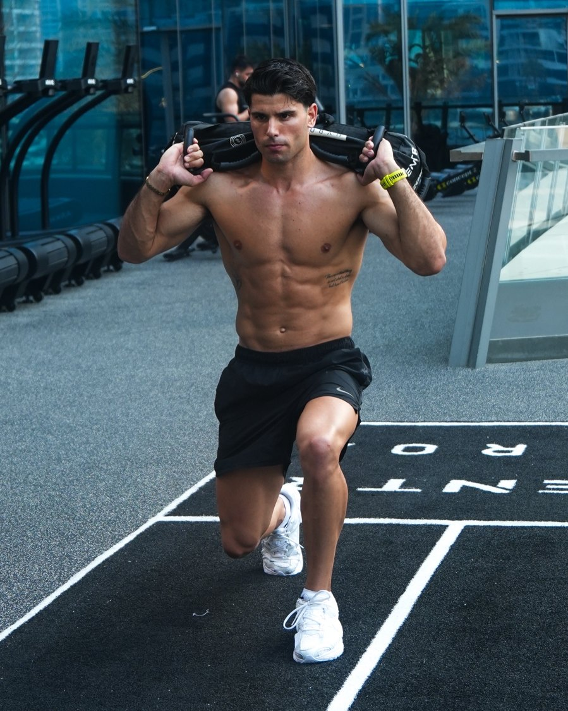

SUPER-ALE · Il Metodo
come allenarsi davvero
Il sistema con cui costruiamo il percorso di ogni cliente SUPER-ALE: progressione, ripetizioni in riserva, blocchi di allenamento, scarico e alimentazione. Spiegato semplice.
Leggila tutta: capirai perché tanti si allenano per anni senza cambiare, e cosa fare di diverso. Se hai qualsiasi domanda, scrivimi su Instagram.
Creata da Alessandro PassalacquaFounder di SUPER-ALE
